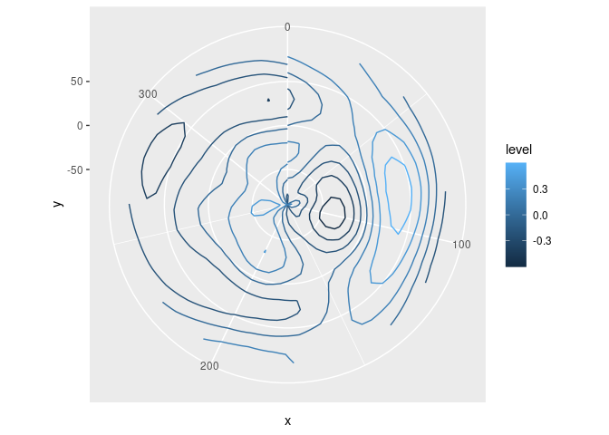
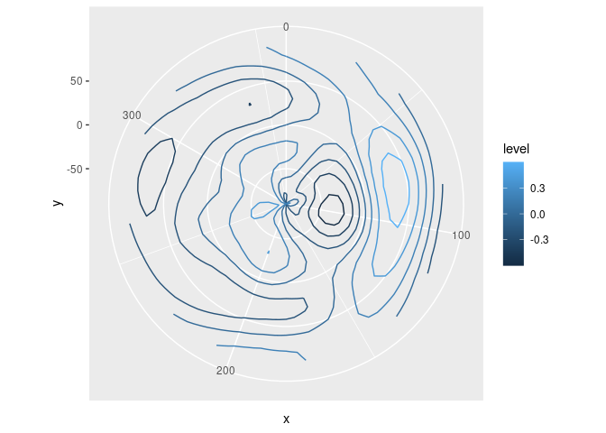

ggperiodic is an attempt to solve the issue of plotting periodic data in ggplot2. It automatically augments your data to wrap it around to any arbitrary domain.
Installation
You can install the latest version from CRAN with
install.packages("ggperiodic")Or you can install the development version from GitHub with:
# install.packages("devtools")
devtools::install_github("eliocamp/ggperiodic")Example
Let’s create some artificial data with periodic domain
x <- seq(0, 360 - 10, by = 10)*pi/180
y <- seq(-90, 90, by = 10)*pi/180
Z <- expand.grid(x = x, y = y)
Z$z <- with(Z, 1.2*sin(x)*0.4*sin(y*2) -
0.5*cos(2*x)*0.5*sin(3*y) +
0.2*sin(4*x)*0.45*cos(2*x))
Z$x <- Z$x*180/pi
Z$y <- Z$y*180/piIf you try to plot it, you’ll notice problems at the limits
library(ggplot2)
ggplot(Z, aes(x, y, z = z, color = ..level..)) +
geom_contour() +
coord_polar()
#> Warning: The dot-dot notation (`..level..`) was deprecated in ggplot2 3.4.0.
#> ℹ Please use `after_stat(level)` instead.
#> This warning is displayed once every 8 hours.
#> Call `lifecycle::last_lifecycle_warnings()` to see where this warning was
#> generated.
With ggperiodic you can define the periodic dimensions and ggplot2 does the rest.
library(ggperiodic)
#>
#> Attaching package: 'ggperiodic'
#> The following object is masked from 'package:stats':
#>
#> filter
Z <- periodic(Z, x = c(0, 360))
ggplot(Z, aes(x, y, color = ..level..)) +
geom_contour(aes(z = z)) +
coord_polar()